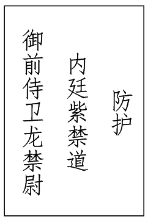

第十三回
秦可卿死封龙禁尉
王熙凤协理宁国府
【回前墨】
此回可卿梦阿凤，盖作者大有深意存焉。可惜生不逢时，奈何奈何！然必写出自可卿之意也，则又有他意寓焉。
荣、宁世家未有不尊家训者。虽贾珍尚奢，岂明逆父哉？故写敬老不管，然后恣意，方见笔笔周到。
诗曰：
一步行来错，回头已百年。
古今风月鉴，多少泣黄泉！
话说凤姐儿自贾琏送黛玉往扬州去后，心中实在无趣。每到晚间，不过和平儿说笑一回，就胡乱睡了。这日夜间，正和平儿灯下拥炉倦绣，早命浓薰绣被，二人睡下，屈指算行程该到何处，不知不觉已交三鼓。平儿已睡熟了。
凤姐方觉星眼微朦，恍惚只见秦氏从外走了进来，含笑说道：“婶婶好睡！我今日回去，你也不送我一程。因娘儿们素日相好，我舍不得婶子，故来别你一别。还有一件心愿未了，非告诉婶子，别人未必中用。”凤姐听了，恍惚问道：“有何心愿？你只管托我就是了。”秦氏道：“婶婶，你是个脂粉队内的英雄，连那些束带顶冠的男子也不能过你，你如何连两句俗语也不晓得？常言‘月满则亏，水满则溢’，又道是‘登高必跌重’。如今我们家赫赫扬扬，已将百载，一日倘或乐极悲生，若应了那句‘树倒猢狲散’的俗语[一]，岂不虚称了一世的诗书旧族了！”凤姐听了此话，心胸大快，十分敬畏，忙问道：“这话虑的极是，但有何法可以永保无虞？”[二]秦氏冷笑道：“婶婶好痴也。否极泰来，荣辱自古周而复始，岂是人力能可保常的。但如今能于荣时筹画下将来衰时的世业，亦可谓常保永全了。即如今日诸事都妥，只有两件事未妥，若把此事如此一行，则日后可保永全。”凤姐便问何事。
秦氏道：“目今祖茔[1]虽四时祭祀，只是无一定的钱粮；第二，家塾虽立，无一定的供给。依我想来，如今盛时固不缺祭祀、供给，但将来败落之时，此二项有何出处？莫若依我定见，趁今日富贵，将祖茔附近多置田庄、房舍、地亩，以备祭祀，供给之费皆出自此处，将家塾亦设于此。合同族中长幼，大家定了则例，日后按房掌管这一年的地亩、钱粮、祭祀、供给之事。如此周流，又无争竞，亦不有典卖诸弊。便是有了罪，凡物可入官，这祭祀产业连官也不入的。便败落下来，子孙回家读书务农，也有个退步，祭祀又可永继。若目今以为荣华不绝，不思日后，终非长策。眼见不日又有一件非常喜事，真是烈火烹油、鲜花着锦之盛。要知道，也不过是瞬息的繁华，一时的欢乐，万不可忘了那‘盛筵必散’的俗语。此时若不早为后虑，临期只恐后悔无益矣。”凤姐忙问：“有何喜事？”秦氏道：“天机不可泄漏。只是我与婶子好了一场，临别赠你两句话，须要记着。”因念道：
三春去后诸芳尽，各自须寻各自门。[三]
凤姐还欲问时，只听得二门上传事云牌连叩四下[四]，将凤姐惊醒。人回：“东府蓉大奶奶没了。”凤姐闻听，吓了一身冷汗，出了一回神，只得忙忙的穿衣服，往王夫人处来。彼时合家皆知，无不纳罕，都有些疑心。[五]那长一辈的想他素日孝顺，平一辈的想他素日和睦亲密，下一辈的想他素日慈爱，以及家中仆从老小想他素日怜贫惜贱、慈老爱幼之恩，莫不悲嚎痛哭者。
闲言少叙，却说宝玉因近日林黛玉回去，剩得自己孤恓，也不和人顽耍，每到晚间便索然睡了。如今从梦中听见说秦氏死了，连忙翻身爬起来，只觉心中似戮了一刀的不忍，“哇”的一声，喷出一口血来。袭人等慌慌忙忙来搊扶[2]，问是怎么样，又要回贾母来请大夫。宝玉笑道：“不用忙，不相干，这是急火攻心，血不归经。”说着便爬起来，要衣服换了，来见贾母，即时要过去。[六]袭人见他如此，心中虽放不下，又不敢拦，只是由他罢了。贾母见他要去，因说：“才嚈气的人，那里不干净；二则夜里风大，明早再去不迟。”宝玉那里肯依。贾母命人备车，多派跟从人役，拥护前来。
一直到了宁国府前，只见府门洞开，两边灯笼照如白昼，乱烘烘人来人往，里面哭声摇山振岳。宝玉下了车，忙忙奔至停灵之室，痛哭一番。然后见过尤氏。谁知尤氏正犯了胃疼旧疾，睡在床上。然后又出来见贾珍。彼时贾代儒带领贾敕、贾效、贾敦、贾赦、贾政、贾琮、贾㻞、贾珩、贾珖、贾琛、贾琼、贾璘、贾蔷、贾菖、贾菱、贾芸、贾芹、贾蓁、贾萍、贾藻、贾蘅、贾芬、贾芳、贾兰、贾菌、贾芝等都来了。贾珍哭的泪人一般，[七]正和贾代儒等说道：“合家大小，远亲近友，谁不知我这媳妇比儿子还强十倍。如今伸腿去了，可见这长房内绝灭无人了。”说着又哭起来。众人忙劝道：“人已辞世，哭也无益，且商议如何料理要紧。”贾珍拍手道：“如何料理，不过尽我所有罢了！”[八]
正说着，只见秦业、秦钟并尤氏的几个眷属[九]也都来了。贾珍便命贾琼、贾琛、贾璘、贾蔷四个人去陪客，一面吩咐去请钦天监阴阳司来择日，择准停灵七七四十九日，三日后开丧送讣闻。这四十九日，单请一百单八众禅僧在大厅上拜大悲谶，超度前亡后化诸魂，以免亡者之罪；另设一坛于天香楼上，[十]是九十九位全真道士，打四十九日解冤洗业醮[3]。然后停灵于会芳园中，灵前另有五十众高僧、五十众高道，对坛按七做好事[4]。那贾敬闻得长孙媳妇死了，因自为早晚就要飞升，如何肯又回家染了红尘，将前功尽弃呢，因此并不在意，只凭贾珍料理。
贾珍见父亲不管，亦发恣意奢华。看板时，几副杉木板皆不中用。可巧薛蟠来吊问，因见贾珍寻好板，便说道：“我们木店里有一副，叫作什么樯木，[十一]出在潢海铁网山上，[十二]做了棺材，万年不坏。这还是当年先父带来，原系义忠亲王老千岁要的，因他坏了事，就不曾拿去。现今还封在店里，也没人出价敢买。你若要，就抬来罢了。”贾珍听了，喜之不禁，即命人抬来。大家看时，只见帮底皆厚八寸，纹若槟榔，味若檀麝，以手扣之，玎珰如金玉。大家都奇异称赏。贾珍笑道：“价值几何？”薛蟠笑道：“拿一千两银子来，只怕也没处买去。什么价不价，赏他们几两工银就是了。”贾珍听说，忙谢不尽，即命解锯糊漆。贾政因劝道：“此物恐非常人可享者，[十三]殓以上等杉木也就是了。”此时贾珍恨不能代秦氏之死，这话如何肯听。[十四]
因忽又听得秦氏之丫嬛名唤瑞珠者，见秦氏死了他也触柱而亡。[十五]此事可罕，合族中人也都称赞。[十六]贾珍遂以孙女之礼殡殓，一并停灵于会芳园之登仙阁。小丫嬛名宝珠者，因见秦氏身无所出，乃甘心愿为义女，誓任摔丧驾灵之任。贾珍喜之不禁，即时传下，从此皆呼宝珠为小姐。那宝珠按未嫁女之丧，在灵前哀哀欲绝。于是，合族人丁并家下诸人，都各遵旧制行事，自不敢紊乱。
贾珍因想着贾蓉不过是个黉门监[5]，灵幡经榜上写时不好看，便是执事也不多，因此心下甚不自在。可巧这日正是首七第四日，早有大明宫掌宫内相戴权[十七]，先备了祭礼遣人抬来，次后坐了大轿，打伞鸣锣亲来上祭。贾珍忙接着，让至逗蜂轩[十八]献茶。贾珍心中打算定了主意，因而趁便就说要与贾蓉捐个前程的话。戴权会意，因笑道：“想是为丧礼上风光些。”贾珍忙笑道：“老内相所见不差。”戴权道：“事到凑巧，正有个美缺。如今三百员龙禁尉短了两员，昨儿襄阳侯的兄弟老三来求我，现拿了一千五百两银子送到我家里。你知道，咱们都是老相遇，不拘怎么样，看着他爷爷的分上，胡乱应了。还剩了一个缺，谁知永兴节度使冯胖子来求，要与他孩子捐，我就没工夫应他。既是咱们的孩子[十九]要捐，快写个履历来。”贾珍听说，忙吩咐：“快命书房里人恭敬写了大爷的履历来。”小厮不敢怠慢，去了一刻，便拿了一张红纸来与贾珍。贾珍看了，忙送与戴权。戴权看时，上面写道：
江南江宁府江宁县监生贾蓉，年二十岁。曾祖原任京营节度使世袭一等神威将军贾代化，祖乙卯科进士贾敬，父世袭三品爵威烈将军贾珍。
戴权看了，回手便递与一个贴身的小厮收了，说道：“回来送与户部堂官老赵，说我拜上他，起一张五品龙禁尉的票，再给个执照，就把那履历填上，明儿我来兑银子送去。”小厮答应了，戴权也就告辞了。贾珍十分款留不住，只得送出府门。临上轿，贾珍因问：“银子还是我到部兑，还是一并送入老内相府中？”戴权道：“若到部里，你又吃亏了。不如平准一千二百两银子送到我家里就完了。”贾珍感谢不尽，只说：“待服满后，亲带小犬到府叩谢。”于是作别。
接着又听喝道之声，原来是忠靖侯史鼎的夫人来了。王夫人、邢夫人、凤姐等刚迎至上房，又见锦乡侯、川宁侯、寿山伯三家祭礼摆在灵前。少时，三家下轿，贾政等忙接上大厅。如此亲朋你来我去，也不能胜数。只这四十九日，宁国府街上一条白漫漫人来人往，花簇簇宦去官来。
贾珍命贾蓉次日换了吉服，领凭回来。灵前供用执事等物，俱按五品职例。灵牌疏上皆写“天朝诰授贾门秦氏恭人之灵位”。会芳园的临街大门洞开，现在两边起了鼓乐厅，两班青衣按时奏乐，一对对执事摆的刀斩斧齐。更有四面朱红销金大字牌对竖在门外，上面大书：

对面高起着宣坛僧道对坛榜文，榜上大书：
世袭宁国公冢孙妇[6]、防护内廷御前侍卫龙禁尉贾门秦氏恭人之丧。四大部州至中之地，奉天承运太平之国，总理虚无寂静教门僧录司正堂万虚、总理元始三一教门道录司正堂叶生等，敬谨修斋，朝天叩佛。
以及“恭请诸伽蓝、揭谛、功曹等神，圣恩普锡，神威远镇，四十九日消灾洗孽平安水陆道场”诸如等语，馀者亦不消烦记。
只是贾珍虽然心意满足，但里头尤氏又犯了旧疾，不能料理事务，惟恐各诰命[7]来往，亏了礼数，怕人笑话，因此心中不自在。当下正忧虑时，因宝玉在侧问道：“事事都算安贴了，大哥哥还愁什么？”贾珍见问，忙将里面无人的话说了出来。宝玉听说，笑道：“这有何难，我荐一个人与你权理这一个月的事，管必妥当。”贾珍忙问是谁，宝玉见座间还有许多亲友，不便明言，走至贾珍耳边说了两句。贾珍听了喜不自禁，连忙起身笑道：“果然安贴，如今就去。”说着拉了宝玉，辞了众人，便往上房里来。
可巧这日非正经日期，亲友来的少，里面不过几位近亲堂客，邢夫人、王夫人、凤姐并合族中的内眷陪坐。有人报说：“大爷进来了。”吓的众婆娘唿的一声，往后藏之不迭，[二十]独凤姐款款站了起来。贾珍此时也有些病症在身，二则过于悲痛了，因拄了拐踱了进来。邢夫人等因说道：“你身上不好，又连日事多，该歇歇才是，又进来做什么？”贾珍一面扶拐，扎挣着要蹲身跪下请安道乏。邢夫人等忙叫宝玉搀住，命人挪椅子来与他坐。贾珍断不肯坐，因勉强陪笑道：“侄儿进来有一件事要恳求二位婶婶并大妹妹。”邢夫人等忙问什么事。贾珍忙笑道：“婶婶自然知道，如今孙子媳妇没了，侄儿媳妇偏又病倒，我看里头着实不成个体统。怎么屈尊大妹妹一个月，在这里料理料理，我就放心了。”邢夫人笑道：“原来为这个。你大妹妹现在你二婶子家，只和你二婶子说就是了。”王夫人忙道：“他一个小孩子家何曾经过这样事，倘或料理不清，反叫人笑话，到是再烦别人好。”贾珍笑道：“婶子的意思侄儿猜着了，是怕大妹妹劳苦了。若说料理不开，我包管必料理的开，便是错一点儿，别人看着还是不错的。从小儿大妹妹顽笑着就有杀伐决断，如今出了阁，又在那府里办事，越发历练老成了。我想了这几日，除了大妹妹再无人了。婶婶不看侄儿、侄儿媳妇的分上，只看死了的分上罢！”说着滚下泪来。王夫人心中怕的是凤姐儿未经过丧事，怕他料理不清，惹人笑话。今见贾珍苦苦的说到这步田地，心中已活了几分，却又眼看着凤姐出神。那凤姐素日最喜揽办，好卖弄才干，虽然当家妥当，也因未办过婚丧大事，恐人还不服，巴不得遇见这事。今日见贾珍如此一来，他心中早已欢喜。先见王夫人不允，后见贾珍说的情真，王夫人有活动之意，便向王夫人道：“大哥哥说的这么恳切，太太就依了罢。”王夫人悄悄的道：“你可能么？”凤姐道：“有什么不能的。外面的大事，大哥哥已经[二十一]料理清了，不过是里头照管照管，便是我有不知道的，问问太太就是了。”王夫人见说的有理，便不则声。
贾珍见凤姐允了，又陪笑道：“也管不得许多了，横竖要求大妹妹辛苦辛苦。我这里先与妹妹行礼，等事完了，我再到那府里去谢。”说着，就作揖下去，凤姐儿还礼不迭。贾珍便向袖中取了宁国府对牌[8]出来，命宝玉送与凤姐，又说：“妹妹爱怎么样就怎么样，要什么只管拿这个取去，也不必问我。只别存心替我省钱，只要好看为上；二则也要与那府里一样待人才好，不要存心怕人抱怨。只这两件外，我再没不放心的了。”凤姐不敢就接牌，只看着王夫人。王夫人道：“你哥哥既这么说，你就照看照看罢了。只是别自作主意，有了事，打发人问你哥哥、嫂子要紧。”宝玉早向贾珍手里接过对牌来，强递与凤姐了。贾珍又问：“妹妹住在这里，还是天天来呢？若是天天来，越发辛苦了。不如我这里赶着收拾出一个院落来，妹妹住过这几日到安稳。”凤姐笑道：“不用。那边也离不得我，到是天天来的好。”贾珍听说，只得罢了。然后又说了一回闲话，方才出去。
一时女眷散后，王夫人因问凤姐：“你今儿怎么样？”凤姐儿道：“太太只管请回去，我须得先理出一个头绪来，才回去得呢。”王夫人听说，便先同邢夫人等回去，不在话下。这里凤姐来至三间一所抱厦内坐了，因想：头一件是人口混杂，遗失东西；第二件，事无专执，临期推委；第三件，需用过废，滥支冒领；第四件，任无大小，苦乐不均；第五件，家人豪纵，有脸者不服钤束[9]，无脸者不能上进。[二十二][二十三]此五件实是宁国府中风俗。不知凤姐如何处治，且听下回分解。[二十四]正是：
金紫万千谁治国，裙钗一二可齐家。
【回后评】
“秦可卿淫丧天香楼”，作者用史笔也。老朽因有魂托凤姐贾家后事二件，岂是安富尊荣坐享人能想得到处？其事虽未行，其言其意则令人悲切感服，姑赦之，因命芹溪删去。
通回将可卿如何死故隐去，是大发慈悲心也，叹！壬午春。
[一]“树倒猢狲散”之语，今犹在耳，屈指三十五年矣。伤哉，宁不恸杀！
[二]非阿凤不明，盖古今名利场中患失之同意也。
[三]此句令批书人哭死。
[四]正是丧音（此批原误入正文。古时云牌三声为吉，四声为凶）。
[五]九个字写尽天香楼事，是不写之写。
[六]如此总是淡描轻写，全无痕迹，方见得有生以来，天分中自然所赋之性如此，非因色所感也。
[七]可笑，如丧考妣，此作者刺心笔也。
[八]“尽我所有”，为媳妇是非礼之谈，父母又将何以待之？故前此有恶奴酒后狂言，及今复见此语，含而不露，吾不能为贾珍隐讳。
[九]伏后文，尤氏姊妹（“尤氏姐妹”原误入正文）。
[十]删！却是未删之笔（本回初稿“秦可卿淫丧天香楼”因故事情节触及作者家事被迫删除改稿。参本回其他批语及回后评）。
[十一]樯者，舟具也。所谓“人生若泛舟”而已，宁不可叹！
[十二]所谓迷津易堕，尘网难逃也。
[十三]政老有深意存焉。
[十四]“代秦氏死”等句，总是填实前文。
[十五]补天香楼未删之文。
[十六]写个个皆到，全无安逸之笔，深得《金瓶》壸奥！
[十七]妙！大权也。
[十八]轩名可思。
[十九]奇谈，画尽阉官口吻。
[二十]数日行止可知。作者自是笔笔不空，批者亦字字留神之至矣。
[二十一]王夫人是悄言，凤姐是响应，故称“大哥哥”。已得三昧矣。
[二十二]旧族后辈受此五病者颇多，余家更甚。三十年前事见书于三十年后，令余悲痛血泪盈面。
[二十三]读五件事未完，余不禁失声大哭，三十年前作书人在何处耶？
[二十四]此回只十页，因删去天香楼一节，少却四五页也。